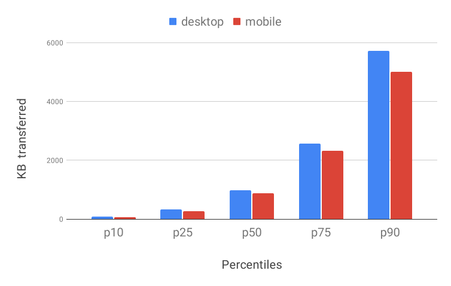
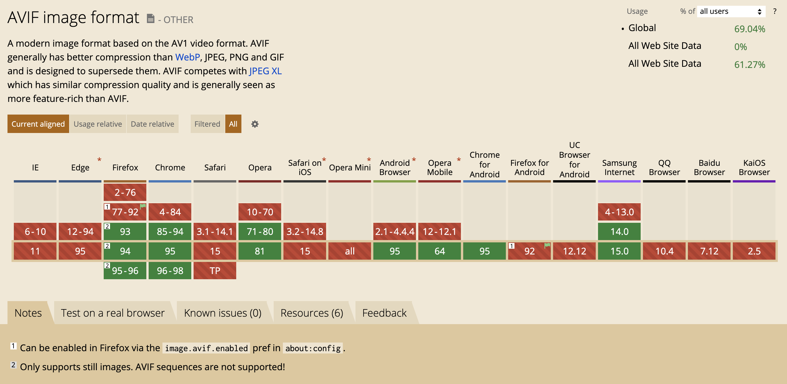
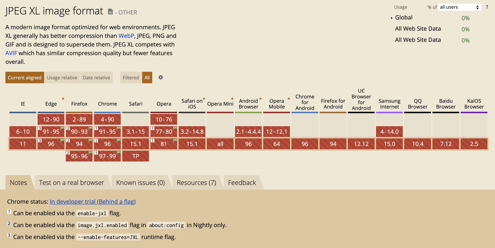
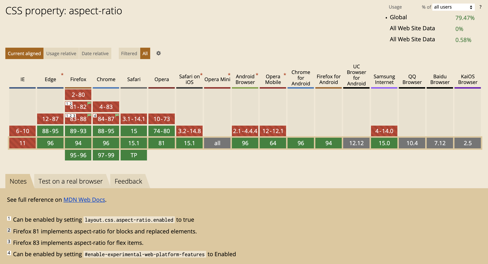

<!DOCTYPE html>
<html lang="en">
  <head>
    <meta charset="utf-8" />
    <meta name="viewport" content="width=device-width, initial-scale=1.0, maximum-scale=1.0, user-scalable=no" />

    <title>reveal-md</title>
    <link rel="shortcut icon" href="./favicon.ico" />
    <link rel="stylesheet" href="./dist/reset.css" />
    <link rel="stylesheet" href="./dist/reveal.css" />
    <link rel="stylesheet" href="/_assets/style.css" id="theme" />
    <link rel="stylesheet" href="./css/highlight/github.css" />


  </head>
  <body>
    <div class="reveal">
      <div class="slides"><section  data-markdown><script type="text/template">

<!-- .slide: data-background="./images/hero_bg.jpg" -->
<h1 class="title dark-background"><span class="translucent">The Future of</span> Front-End Performance</h1>
<h2 class="subtitle">Sia Karamalegos</h2>
</script></section><section  data-markdown><script type="text/template">
## hi, i'm sia

[sia.codes](https://sia.codes/)


</script></section><section  data-markdown><script type="text/template">
## [bit.ly/perf-90](http://bit.ly/perf-90)
</script></section><section  data-markdown><script type="text/template">
## Take out a piece of paper...


</script></section><section  data-markdown><script type="text/template">
<!-- .slide: data-background="./images/elevator2.jpg" -->
<h1 class="dark-background">
  <span class="highlighter">Why do elevators have mirrors?</span>
</h1>
</script></section><section  data-markdown><script type="text/template">
# Why Should I Care?
</script></section><section  data-markdown><script type="text/template">
> Pinterest reduced load times by 40% and saw a 15% increase in sign ups.

<small>https://wpostats.com/</small>
</script></section><section  data-markdown><script type="text/template">
> Starbucks implemented a 2x faster time to interactive resulting in a 65% increase in rewards registrations.

<small>[Chrome Dev Summit 2018](https://www.youtube.com/watch?v=Xryhxi45Q5M&t=1113s&index=6&list=PLNYkxOF6rcIDjlCx1PcphPpmf43aKOAdF)</small>
</script></section><section  data-markdown><script type="text/template">
> AliExpress reduced load by 36% and saw a 10.5% increase in orders.

<small>https://wpostats.com/</small>
</script></section><section  data-markdown><script type="text/template">
> Speed is now a ranking factor for Google Search and Ads.

<small>https://developer.chrome.com/blog/search-ads-speed/</small>
</script></section><section  data-markdown><script type="text/template">


<small>[Moving towards a faster web](https://blog.chromium.org/2019/11/moving-towards-faster-web.html)</small>
</script></section><section  data-markdown><script type="text/template">
The internet consumes 416.2 TWh of electricity per year. A 10% savings would be equivalent to:

- 6.2 million fewer cars on the road 🚗 <!-- .element: class="fragment fade-in-then-semi-out" -->
- 32 billion less pounds of coal being burned 💨 <!-- .element: class="fragment fade-in-then-semi-out" -->
- 486 million tree seedlings grown for 10 years 🌳 <!-- .element: class="fragment fade-in-then-semi-out" -->

<small>[How is your website impacting the planet?](https://www.websitecarbon.com/), [Greenhouse Gas Equivalencies Calculator](https://www.epa.gov/energy/greenhouse-gas-equivalencies-calculator)</small>

<aside class="notes"><p>Most of the energy is consumed by the network and data center, not users&#39; devices.</p>
</aside></script></section><section  data-markdown><script type="text/template">
# 📈 Metrics 📈
</script></section><section  data-markdown><script type="text/template">
> When optimizing for speed, <br>**user experience** should always <br>be your primary metric.
</script></section><section  data-markdown><script type="text/template">
## User experience

1. When can I see the page? <!-- .element: class="fragment fade-in-then-semi-out" -->
2. When can I interact with it? <!-- .element: class="fragment fade-in-then-semi-out" -->
3. Does it respond to my interactions? <!-- .element: class="fragment fade-in-then-semi-out" -->
4. Is it delightful? <!-- .element: class="fragment fade-in-then-semi-out" -->
</script></section><section  data-markdown><script type="text/template">
## Core Web Vitals


<small>[Web Vitals](https://web.dev/vitals/), [The Science Behind Web Vitals](https://blog.chromium.org/2020/05/the-science-behind-web-vitals.html)</small>

<aside class="notes"><p>Target is 75% of loads. &quot;Core Web Vitals are the subset of Web Vitals that apply to all web pages, should be measured by all site owners, and will be surfaced across all Google tools. Each of the Core Web Vitals represents a distinct facet of the user experience, is measurable in the field, and reflects the real-world experience of a critical user-centric outcome.&quot; Note modifications over time to improve.</p>
</aside></script></section><section  data-markdown><script type="text/template">
## New metric!

**Interaction to Next Paint** (INP): new, experimental metric that assesses how fast a page responds to user input

- Visual feedback is important<!-- .element: class="fragment fade-in" -->
- Measures overall interaction latency<!-- .element: class="fragment fade-in" -->
- Duration from user interaction until next frame is presented after event handlers executed<!-- .element: class="fragment fade-in" -->
- "Good" is currently < 200 ms<!-- .element: class="fragment fade-in" -->
- Impacted by too much JS, other non-JS work on the main thread running concurrently with user interactions<!-- .element: class="fragment fade-in" -->

<small>[Interaction to Next Paint (INP)](https://web.dev/inp/)</small>

<aside class="notes"><p>measures the worst interaction when &lt; 50 or the 98th percentile</p>
</aside></script></section><section  data-markdown><script type="text/template">
## New metric under evaluation

_Provide feedback now!_

- [Smoothness/animation metric](https://web.dev/smoothness/)
</script></section><section  data-markdown><script type="text/template">
<h1 style="font-size:2.4em;"> 🧪 Test Environments 🧪 </h1>
</script></section><section  data-markdown><script type="text/template">
## Testing Environments

<br>

<table class="fixed-two-column" id="invisible-gridlines">
  <thead>
    <tr>
      <th>Lab/Synthetic</th>
      <th>Field/Real User Monitoring (RUM)</th>
    </tr>
  </thead>
  <tbody>
    <tr>
      <td>
        <ul class="plus-minus" style="display:inline;">
          <li class="plus">Controlled environment</li>
          <li class="plus">Predefined network and device settings</li>
          <li class="plus">Reproducible for better performance debugging</li>
          <li class="minus">May not capture real-world bottlenecks</li>
        </ul>
      </td>
      <td>
        <ul class="plus-minus" style="display:inline;">
          <li class="plus">Performance data from <strong>real user page loads</strong> and interactions</li>
          <li class="minus">Limited data and performance debugging capability</li>
      </td>
    </tr>
  </tbody>
</table>
</script></section><section  data-markdown><script type="text/template">
## New Lab Testing Tools/Features

- [Render-blocking JS and CSS flags](https://sia.codes/posts/render-blocking-resources/#how-do-i-test-my-website-for-render-blocking-resources%3F) in WebPageTest
- [Opportunities and experiments](https://product.webpagetest.org/experiments) in WebPageTest
- [Lighthouse Treemap](https://sia.codes/posts/lighthouse-treemap/)
- [Lighthouse user flows](https://web.dev/lighthouse-user-flows/)
- Chrome Dev Tools [recorder panel](https://developer.chrome.com/blog/new-in-devtools-97/#recorder) ([video](https://twitter.com/addyosmani/status/1465221489209319428))
- Chrome Dev Tools [performance insights panel](https://developer.chrome.com/docs/devtools/performance-insights/)
</script></section><section  data-markdown><script type="text/template">
## More focus on real user data

- [Web Vitals Report](https://web-vitals-report.web.app/) + [web-vitals npm package](https://github.com/GoogleChrome/web-vitals)
- Many analytics vendors ([Speedcurve](https://www.speedcurve.com/), [Calibre](https://calibreapp.com/))
- Starting to be bundled in more general analytics/deployment products like [Layer 0](https://www.layer0.co/performance-monitor)
- [Reporting API](https://developer.mozilla.org/en-US/docs/Web/API/Reporting_API)
</script></section><section  data-markdown><script type="text/template">
<!-- .slide: data-background="./images/yellow-camera.jpg" -->
<h1 class="title" style="text-align:left;color: rgb(214, 61, 31);">Images</h1>
</script></section><section  data-markdown><script type="text/template">
Images account for 45% of the bytes <br>on average needed to load a webpage.

<small>[httparchive.org](https://httparchive.org), October 2021</small>

<aside class="notes"><p>actually down from 50% - maybe due to increased use of lazy loading</p>
</aside></script></section><section  data-markdown><script type="text/template">


<small>[httparchive.org](https://httparchive.org), October 2021</small>
</script></section><section  data-markdown><script type="text/template">
## kB by Percentile



<small>[httparchive.org](https://httparchive.org), October 2021</small>
</script></section><section  data-markdown><script type="text/template">
<!-- .slide: data-background="./images/disk-drive.jpg" class="dark-highlighter" -->

# File Format <!-- .element: class="dark-background" style="color:#fecf16" -->
</script></section><section  data-markdown><script type="text/template">
> Choosing the right image format... can be far more important than any flashy new “responsive image” technique.

<small>Mat Marquis, [Image Performance](https://abookapart.com/products/image-performance)</small>

<aside class="notes"><p>Responsive Issues Community Group (RICG) chair. Getting the right image format is more important than any responsive image technique.</p>
</aside></script></section><section  data-markdown><script type="text/template">
## WEBP: Increased cross-browser availability


<small>[caniuse](https://caniuse.com/#feat=webp)</small>

<aside class="notes"><p>WEBP is a new format available on most modern browsers (I&#39;m looking at you, Safari) that combines the best of JPG and PNG with smaller sizes. It&#39;s lossy or lossless and supports transparency.</p>
</aside></script></section><section  data-markdown><script type="text/template">
## AVIF: The future



<small>[Equal file sizes demo](https://jakearchibald.com/2020/avif-has-landed/#at-equal-file-sizes) by Jake Archibald, [caniuse](https://caniuse.com/avif)</small>

<aside class="notes"><p>AVIF is an extraction from the keyframes of the now popular video format AV1. Best compression, supports transparency and more.</p>
</aside></script></section><section  data-markdown><script type="text/template">
## JPEG XL: The way future



<small>[caniuse](https://caniuse.com/jpegxl)</small>
</script></section><section  data-markdown><script type="text/template">
## Cheatsheet

- ✅ SVG: logos and icons <!-- .element: class="fragment fade-in-then-semi-out no-bullet" -->
- ❌ GIF: don't. use jpg for a still or video for animation. <!-- .element: class="fragment fade-in-then-semi-out no-bullet" -->
- ✅ PNG: photo-like images with transparency <!-- .element: class="fragment fade-in-then-semi-out no-bullet" -->
- ✅ JPG: photo-like images with no transparency <!-- .element: class="fragment fade-in-then-semi-out no-bullet" -->
- ✅ WEBP: smaller, but need to serve fallbacks <!-- .element: class="fragment fade-in-then-semi-out no-bullet" -->
- ✅ AVIF: EVEN SMALLER, but need to serve fallbacks <!-- .element: class="fragment fade-in-then-semi-out no-bullet" -->

<small>[Responsive Doggos Demo](https://projects.sia.codes/responsive-images-demo/)</small>

<aside class="notes"><p>Raster file formats are really just different compression methods. <strong>SVG</strong>: Can style and animate with CSS or make basic edits in XML. <strong>GIF</strong>: huge file sizes for animation, use video instead. svg or jpg are better for stills. Twitter converts GIF to video. <strong>PNG</strong>: Use jpg if don&#39;t need transparency. <strong>JPG</strong>: much better compression algos.</p>
</aside></script></section><section  data-markdown><script type="text/template">
# 📺 Size &amp; Resolution 📺
</script></section><section  data-markdown><script type="text/template">
## `srcset` & `sizes`

```html

```
</script></section><section  data-markdown><script type="text/template">
<!-- .slide: data-background="./images/elder-phone.jpg" -->
<h1 style="text-align:right;">🤔</h1>

<aside class="notes"><p>How many different resolutions? Science suggests humans can see 720ppi 1 foot from a screen. The iPhone 11 is 326ppi (MBP is 227) so in most cases, you&#39;re safe providing only 1x and 2x. You might consider 4x in cases of high-resolution projectors or art.</p>
</aside></script></section><section  data-markdown><script type="text/template">


<small><a href="https://twitter.com/TheRealNooshu/status/1397862141894529027">Tweet thread</a> with GOV.UK screen width and DPR data, <a href="https://jakearchibald.com/2021/serving-sharp-images-to-high-density-screens/">Halve the size of images by optimising for high density displays</a></small>

<aside class="notes"><p>Furthermore, nowadays most mobile screens are 2x and 3x so we can simplify by not providing 1x options at those screen sizes</p>
</aside></script></section><section  data-markdown><script type="text/template">
## Bleeding-Edge File Formats

```html
<picture>
  <source type="image/avif" srcset="pug_life.avif" />
  <source type="image/webp" srcset="pug_life.webp" />
  
</picture>
```
</script></section><section  data-markdown><script type="text/template">
## `webp`, `srcset`, &amp; `sizes`, oh my!

```html
<picture>
  <source
    srcset="./images/sofa_pug_400.avif 400w, ./images/sofa_pug_800.avif 800w"
    sizes="(max-width: 320px) 280px, 400px"
    type="image/avif"
  />
  <source
    srcset="./images/sofa_pug_400.webp 400w, ./images/sofa_pug_800.webp 800w"
    sizes="(max-width: 320px) 280px, 400px"
    type="image/webp"
  />
  
</picture>
```
</script></section><section  data-markdown><script type="text/template">
## Paid Services 💰

For example, [Cloudinary](https://cloudinary.com/) supports AVIF, and you can optionally sign up for the beta to use it with `f_auto`.

```bash
[baseUrl]/eeeps/image/upload/f_auto,q_70,w_512/photo.jpg
```

<small>[What to know about AVIF on Cloudinary](https://sia.codes/posts/avif-on-cloudinary/)</small>
</script></section><section  data-markdown><script type="text/template">
## More tools created & more packaged into popular frameworks for DX

- Simple `` and server/serverless function selects best image to serve
- Build tools and integrated frameworks (but `sizes` not always supported)
  - [next/image](https://nextjs.org/docs/api-reference/next/image)
  - [responsive-loader](https://github.com/herrstucki/responsive-loader)
  - [gatsby-image](https://www.gatsbyjs.org/packages/gatsby-image/) and [gatsby-transformer-sharp](https://image-processing.gatsbyjs.org/)
  - [Eleventy image plugin](https://www.11ty.dev/docs/plugins/image/)

<aside class="notes"><p>(1) Many people have their server hijack the request and serve the best image to minimize markup. Could also use a serverless function. (2) Cost money. (3) So many options - both create your srcset code and process the images</p>
</aside></script></section><section  data-markdown><script type="text/template">
<!-- .slide: data-background="./images/falling-mountains.jpg" class="dark-highlighter" -->

# Layout Shift
</script></section><section  data-markdown><script type="text/template">
<video controls width="800" autoplay loop>
  <source src="./images/layout-shift.mp4" type="video/mp4">
  Sorry, your browser doesn't support embedded videos.
</video>
</script></section><section  data-markdown><script type="text/template">
```html

```

```css
img {
  height: auto;
  max-width: 100%;
}
```

<small>[Do This to Improve Image Loading on Your Website](https://www.youtube.com/watch?v=4-d_SoCHeWE&feature=youtu.be) - video by Jen Simmons</small>

<aside class="notes"><p>Setting the height and width on the image sets an aspect ratio, and then the CSS is respected.</p>
</aside></script></section><section  data-markdown><script type="text/template">
<video controls width="800" autoplay loop>
  <source src="./images/fixed-layout-shift.mp4" type="video/mp4">
  Sorry, your browser doesn't support embedded videos.
</video>
</script></section><section  data-markdown><script type="text/template">
## New aspect-ratio for beyond images

```css
aspect-ratio: 1 / 1;
aspect-ratio: 16 / 9;
aspect-ratio: 0.5;
```



<small>[caniuse](https://caniuse.com/aspect-ratio), [Setting Height And Width On Images Is Important Again](https://www.smashingmagazine.com/2020/03/setting-height-width-images-important-again/#fixing-the-resizing-problem)</small>
</script></section><section  data-markdown><script type="text/template">
## ⚡🦄🌈⚡ Native lazy-loading ⚡🦄🌈⚡

```html
<!-- Lazy-load offscreen image when user scrolls near -->


<!-- Load an image immediately -->

```

<small>[addyosmani.com/blog/lazy-loading/](https://addyosmani.com/blog/lazy-loading/)</small>
</script></section><section  data-markdown><script type="text/template">
# ⚡🦄🐈🌈🐼🍕🎂🍾🎉🐶🦄🐈🌈🐼🍕🎂🍾🎉🐶⚡🐈🌈🐼🍕🎂🍾🎉🐶⚡🦄🌈🐼🍕🎂🍾🎉🐶⚡🦄🐈
</script></section><section  data-markdown><script type="text/template">
## Finally coming to Safari Tech Preview!


<small>[caniuse](https://caniuse.com/loading-lazy-attr)</small>

<aside class="notes"><p>It&#39;s getting closer! Last time I checked, it was around 60%</p>
</aside></script></section><section  data-markdown><script type="text/template">
# ⌚ Latency ⌚
</script></section><section  data-markdown><script type="text/template">
> Bandwidth is the width of the tube and latency is its length.

<small>[A brief guide to using WebpageTest](https://davidea.st/articles/a-brief-guide-to-webpagetest)</small>
</script></section><section  data-markdown><script type="text/template">
For large or content-heavy sites like Netflix, bandwidth is critical. For everyone else, it's the **latency**.
</script></section><section  data-markdown><script type="text/template">
<iframe src="https://player.vimeo.com/video/14439742" width="640" height="480" frameborder="0" allow="autoplay; fullscreen" allowfullscreen></iframe>

<small><a href="https://vimeo.com/14439742">Packet Flight: HTTP request @ 40X</a> from <a href="https://vimeo.com/carlosb">Carlos Bueno</a> on <a href="https://vimeo.com">Vimeo</a>. [TCP congestion control](https://en.wikipedia.org/wiki/TCP_congestion_control)</small>
</script></section><section  data-markdown><script type="text/template">


<small>[What Is TCP Slow Start](https://www.keycdn.com/support/tcp-slow-start)</small>
</script></section><section  data-markdown><script type="text/template">
## 103 Early Hints

> 103s are served to clients while a 200 OK (or error) response is being prepared (the so-called “server think time”), and contain hints on which assets will likely be needed to fully render the web page.

<small>[Early Hints: How Cloudflare Can Improve Website Load Times by 30%](https://blog.cloudflare.com/early-hints/), [Chrome Status: Feature: 103 Early Hints for Navigation](https://www.chromestatus.com/feature/5207422375297024)</small>

<aside class="notes"><p>&quot;the page load could have been accelerated had the browser known, prior to receiving the full response, that the stylesheet and the four subsequent scripts will be needed to render the page. Early Hints avoids these issues by “hinting” (vs. push being dictatorial) to clients which assets they should load, allowing them to prioritize resource loads with more complete information about what they will likely need to render a page, what they have cached, and other heuristics.&quot;</p>
</aside></script></section><section  data-markdown><script type="text/template">


<small>https://twitter.com/colinbendell/status/1539322190541295616</small>
</script></section><section  data-markdown><script type="text/template">
## Priority Hints

```html
<!-- Manage in-viewport priorities -->


<ul class="carousel">
  
  
  
  
</ul>

<!-- Initiate an early fetch for a resource, but also deprioritize it -->
<link rel="preload" href="/js/script.js" as="script" importance="low" />
```

<small>[Optimizing resource loading with Priority Hints](https://web.dev/priority-hints/)</small>
</script></section><section  data-markdown><script type="text/template">
"18% of global Android Chrome users have Lite Mode enabled (aka Save-Data)"


<small>https://twitter.com/colinbendell/status/1265675813204172810</small>

<aside class="notes"><p>true numbers higher <a href="https://twitter.com/addyosmani/status/1265677876608655361">https://twitter.com/addyosmani/status/1265677876608655361</a></p>
</aside></script></section><section  data-markdown><script type="text/template">
## `prefers-reduced-data`...<br> is still experimental


<small>[caniuse](https://caniuse.com/mdn-css_at-rules_media_prefers-reduced-data)</small>
</script></section><section  data-markdown><script type="text/template">
<!-- .slide: data-background="./images/AA-font.jpg" -->
</script></section><section  data-markdown><script type="text/template">
## FOUT

<video autoplay loop>
  <source src="./images/fout.mp4" type="video/mp4">
  Oops, video not supported
</video>
</script></section><section  data-markdown><script type="text/template">
> The style doesn’t matter so much, it’s that it has to flow the same way.

— Tim Brown, Twitter
</script></section><section  data-markdown><script type="text/template">
## Font Style-Matcher by Monica Dinculescu

[meowni.ca/font-style-matcher/](https://meowni.ca/font-style-matcher/)
</script></section><section  data-markdown><script type="text/template">
## Enter CSS font descriptors

```css
@font-face {
  font-family: "Lato";
  src: url("/static/fonts/Lato.woff2") format("woff2");
  font-weight: 400;
}

@font-face {
  font-family: "Lato-fallback";
  size-adjust: 97.38%;
  ascent-override: 99%;
  src: local("Arial");
}

h1 {
  font-family: Lato, Lato-fallback, sans-serif;
}
```

<small>[A New Way To Reduce Font Loading Impact: CSS Font Descriptors](https://www.smashingmagazine.com/2021/05/reduce-font-loading-impact-css-descriptors/), [Automatic Font Matching](https://deploy-preview-15--upbeat-shirley-608546.netlify.app/perfect-ish-font-fallback/?font=Montserrat). caniuse: [size-adjust](https://caniuse.com/mdn-css_at-rules_font-face_size-adjust), [ascent-override](https://caniuse.com/mdn-css_at-rules_font-face_ascent-override), [descent-override](https://caniuse.com/mdn-css_at-rules_font-face_descent-override), [line-gap-override](https://caniuse.com/mdn-css_at-rules_font-face_line-gap-override)</small>
</script></section><section  data-markdown><script type="text/template">


<small>Original art by [Jimmie Durhan](https://hirshhorn.si.edu/explore/jimmie-durham-still-life-spirit-xitle/), please forgive the meme I created over it</small>
</script></section><section  data-markdown><script type="text/template">
## New trends for managing 3rd parties


<small>https://twitter.com/addyosmani/status/1467033429988429826</small>
</script></section><section  data-markdown><script type="text/template">
<!-- .slide: data-background="./images/baggage_claim.jpg" -->
<h1 class="dark-background">
  <span class="highlighter">Houston's Baggage Claim Complaints</span>
</h1>

<small>http://www.nytimes.com/2012/08/19/opinion/sunday/why-waiting-in-line-is-torture.html</small>

<aside class="notes"><p>“Often the psychology of queuing is more important than the statistics of the wait itself,” notes the M.I.T. operations researcher Richard Larson. Occupied time (walking to baggage claim) feels shorter than unoccupied time (standing at the carousel).</p>
</aside></script></section><section  data-markdown><script type="text/template">
> Are you better off making the site load faster or ensuring that users complete their tasks?

<small>Christine Perfetti, [The Truth About Download Time](https://articles.uie.com/download_time/) 2006</small>
</script></section><section  data-markdown><script type="text/template">
<!-- .slide: data-background="./images/hero_bg.jpg" -->
<h1 class="title dark-background">Thanks!</h1>
Slides, resources, and more at <a href="https://sia.codes" class="dark-background">sia.codes</a>
</script></section></div>
    </div>

    <script src="./dist/reveal.js"></script>

    <script src="./plugin/markdown/markdown.js"></script>
    <script src="./plugin/highlight/highlight.js"></script>
    <script src="./plugin/zoom/zoom.js"></script>
    <script src="./plugin/notes/notes.js"></script>
    <script src="./plugin/math/math.js"></script>
    <script>
      function extend() {
        var target = {};
        for (var i = 0; i < arguments.length; i++) {
          var source = arguments[i];
          for (var key in source) {
            if (source.hasOwnProperty(key)) {
              target[key] = source[key];
            }
          }
        }
        return target;
      }

      // default options to init reveal.js
      var defaultOptions = {
        controls: true,
        progress: true,
        history: true,
        center: true,
        transition: 'default', // none/fade/slide/convex/concave/zoom
        plugins: [
          RevealMarkdown,
          RevealHighlight,
          RevealZoom,
          RevealNotes,
          RevealMath
        ]
      };

      // options from URL query string
      var queryOptions = Reveal().getQueryHash() || {};

      var options = extend(defaultOptions, {"transition":"none"}, queryOptions);
    </script>


    <script>
      Reveal.initialize(options);
    </script>
  </body>
</html>
